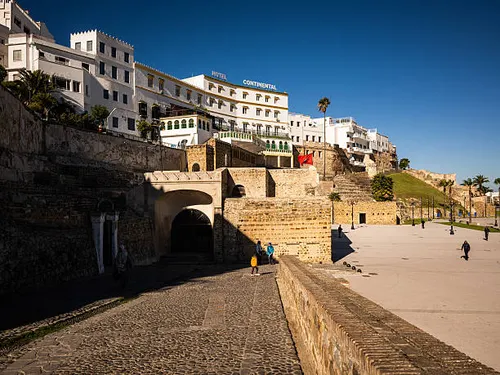

06
· 1684 AD · Tangier
Tanger Dar el Makhzen
Then — 1900s

vs
Now — 2026

Historical ContextBuilt by Sultan Moulay Ismail following the evacuation of the British from Tangier, this palace was strategically placed on the highest point of the city. It served as the residence for the sultans of Morocco during their stays in the North and housed the governor's courts.
Why It EnduresOverlooking the Medina and the Strait of Gibraltar, the palace is now a museum of Moroccan arts and antiquities. Its stunning zellij tilework, carved wooden ceilings, and Andalusian gardens stand as a testament to Tangier's role as the historic gateway between Africa and Europe.